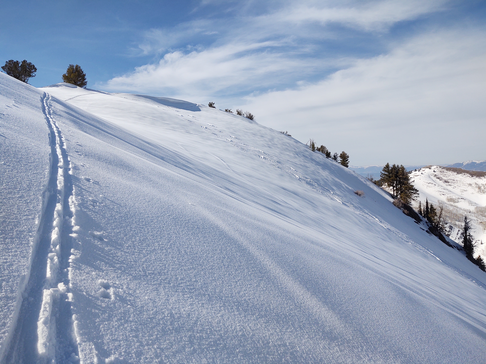

One of my most favorite tours is Grandview Peak! This area is amazing! And I really thought that skiing back down Cottenwood Gultch wouldn't be that great, but I thought it was awesome! It was really neat to get this far into the backcountry.
I took the advice of Owen Reeder's blog to get up there. He did a bike-to-ski tour to get up there, and so that's what I did too. You park at the trail-head near the mouth of the canyon, bike up as far as you can until it's too snowy, lock your bike up, then start skinning up the Meadows Trail.
The trickiest part is knowing when to leave the Meadows Trail to go up Cottonwood Gultch. If you scout out some landmarks during summer exploring, it will make it easier when you come back in spring or winter. You lose all context when you're in the bottom of the canyon. (And oh what a beautiful canyon City Creek is!)
I ended up getting lost the first time I went, but eventually got into the gultch. Once there, it's an easy skin up to Grandview Peak. I then skied a nearby bowl a few times before skiing out. There were some old motorized ski-bike tracks there, but fortunately, they were old-enough to not be too bothersome. Unfortunately, this is another one of those areas that can get overrun by those infernal machine.
Like the Burrow Mine, the Powder Bird Guides will sometimes take their clients here. It always sucks when you work really hard to get somewhere only to see it's been skied out by those guys.
Watch out for moose and mountain lions.